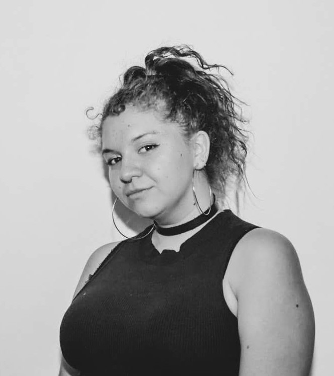

Curriculum Vitae

Trinidad Albert
Resumen
Artista Visual con experiencia en la elaboración de soportes tradicionales, uniendo químicos con materiales comunes y corrientes dentro de la pintura.
Sobre mí
- 05/05/1998
- Scout
- Streamer en Twitch
Educación
- Universidad Finis Terrae
-
2017 - 2021 | Licenciatura en Artes Visuales
- Colegio Mariano de Schöenstatt
Experiencia
-
|2019| Tutora taller de arte por el día de la cultura, escuela de la Industria Gráfica
-
|2021| Seven24 (Minimarket Peñalolén)
- Cajera
- Reponedora
- Organización del local
- Limpieza
- Atención del cliente
- |2021| La Oca (Minimarket La Reina)
- Cajera
- Reponedora
- Organización del local
- Limpieza
- Atención al Cliente
- | 2021 - Actualidad | Embajadora Artes Visuales Admisión Universidad Finis Terrae
- Atención al Cliente
- Envío de Correos
- Manejo de Información
- Reuniones con prospectos alumnxs
- Charlas motivacionales en Instituciones Académicas
Habilidades
- Pintura/Grabado/Escultura
- Ilustración Digital
- Fotografía
- Manejo con programas Adobe; Photoshop, Illustrator y similares.
- Instalación
- Inglés Avanzado
- Programas de Ofimática
Fortalezas
- Habilidades Blandas desarrolladas
- Proactividad
- Responsabilidad
- Trabajo en equipo
- Carisma
- Paciencia
- Empatía
Redes